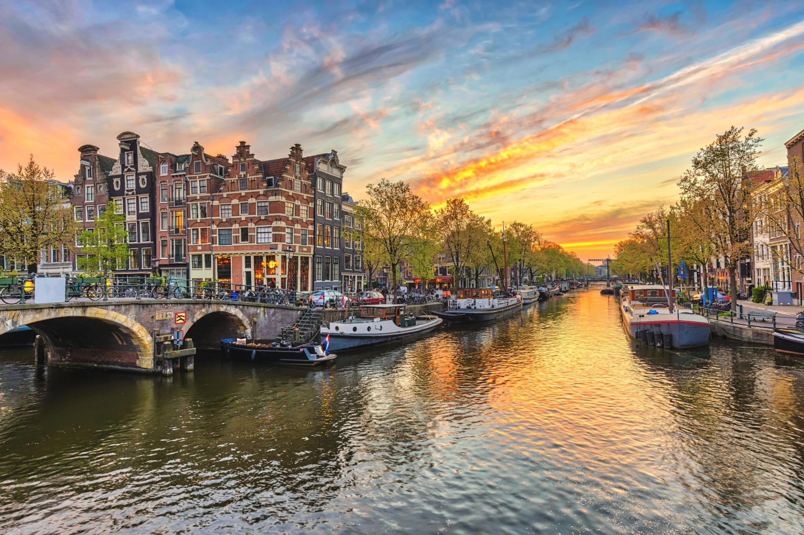

The Dutch Golden Age
During the 17th century, the Netherlands experienced a period known as the Dutch Golden Age. At that time, the country became one of the most powerful trading nations in the world.
Dutch merchants traveled across continents and built strong economic relationships with many countries. Art, science, and technology also developed rapidly during this period.

The VOC Era
The Dutch East India Company (VOC) was established in 1602 and became one of the most influential trading companies in history.
The VOC played an important role in global trade and maritime exploration, helping the Netherlands become a major economic power in Europe.

Modern Netherlands
Today, the Netherlands is known as a modern and innovative country with advanced technology, strong education, and high quality of life.
The country continues to preserve its historical heritage while embracing progress and sustainability.